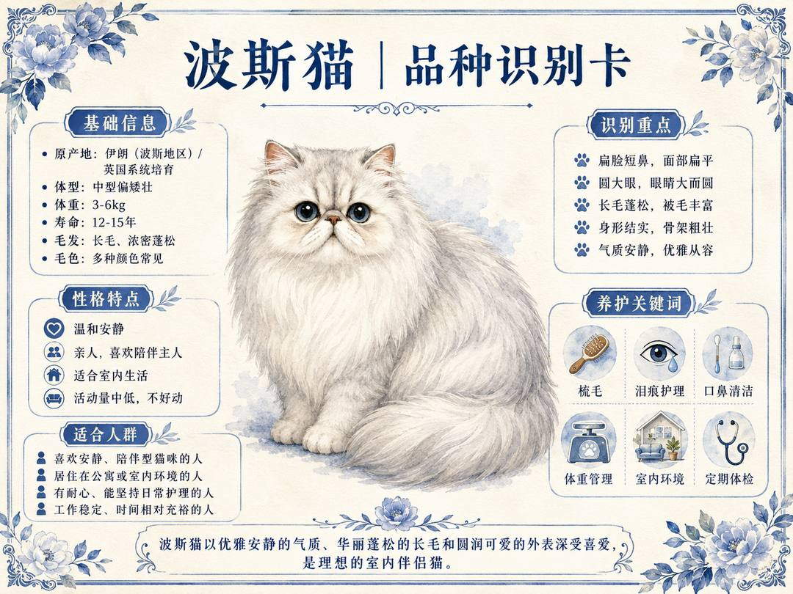
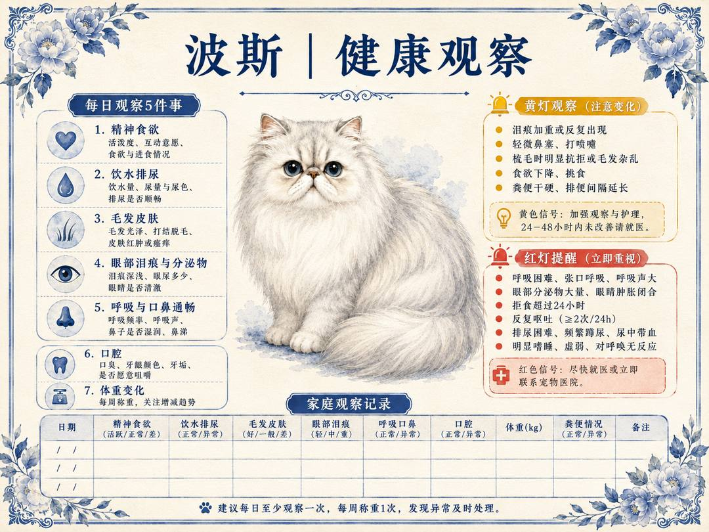
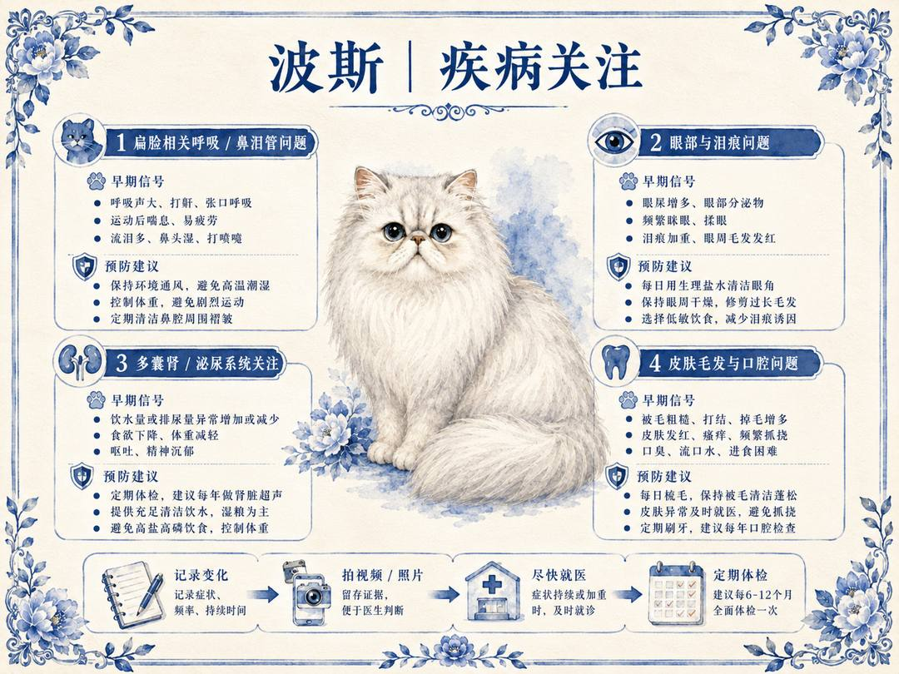
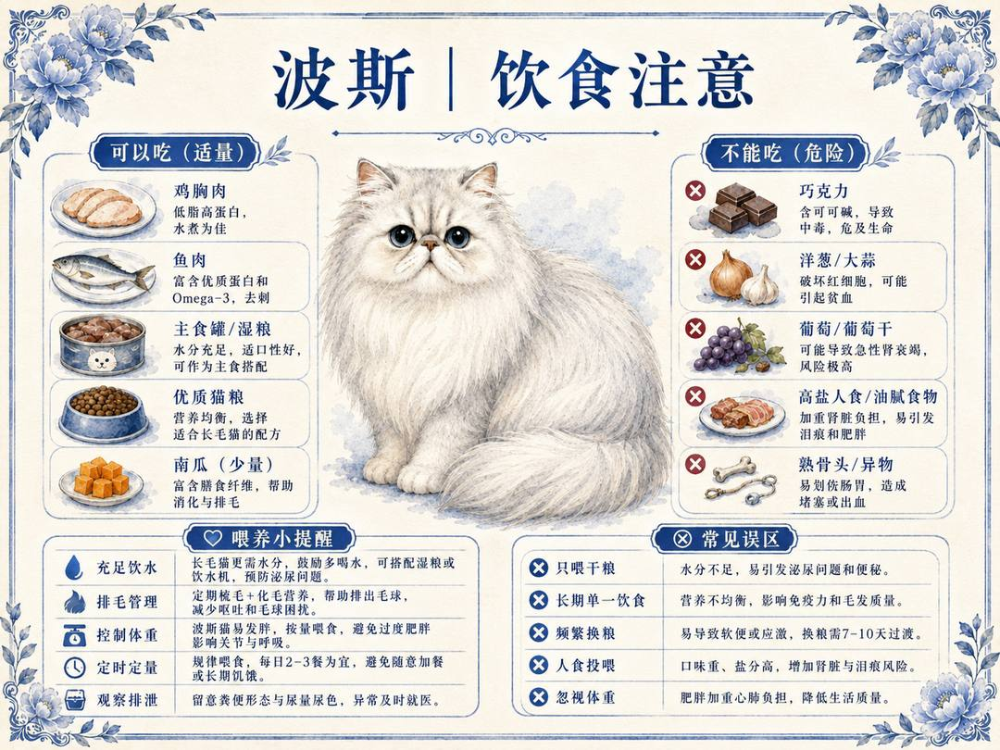
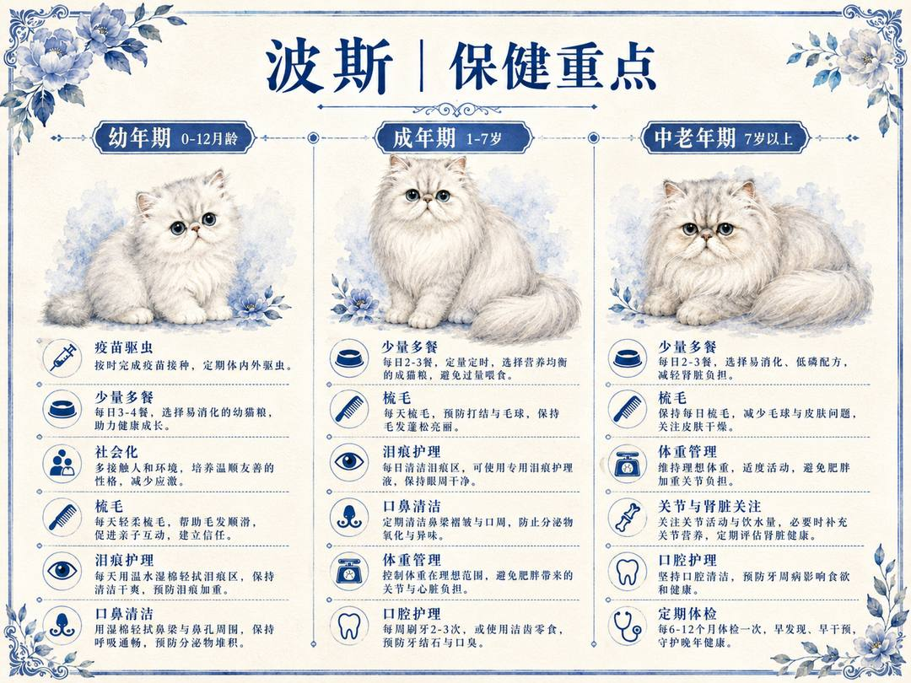
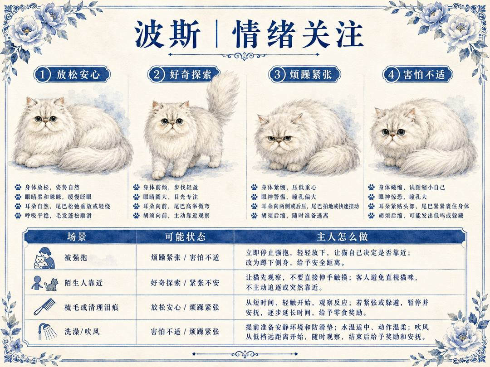
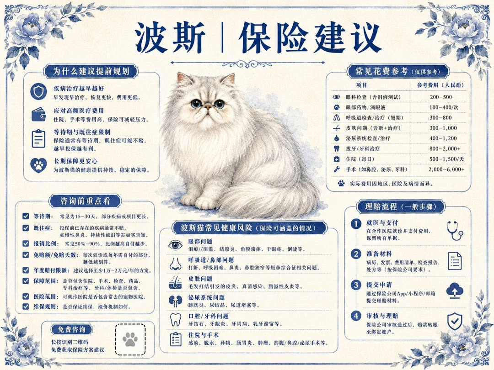
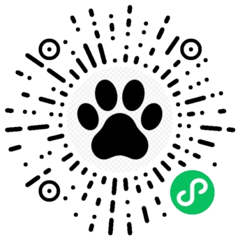

长毛猫体型特征
面部护理照护重点
安静亲人性格印象
本页已整合品种识别，继续向下可查看健康、疾病、饮食、保健、情绪和保障。
一份适合波斯猫家长收藏的品种照护卡。把识别重点、日常观察、饮食护理、情绪信号和保障准备放在一起，方便后续为自家宠物建档。


判断波斯是否健康，不能只看“今天有没有精神”，更重要的是先建立它自己的日常基线。主人每天可以固定观察精神食欲、饮水、猫砂盆、体重活动、毛发皮肤、口腔眼耳和呼吸状态。

疾病关注板块不建议只罗列病名，因为普通主人更需要知道“什么时候该警惕”。波斯需要重点关注眼鼻泪痕与短鼻呼吸问题、长毛打结和皮肤炎症、牙周问题、泌尿与肾脏风险等问题。

波斯的饮食管理要先确定主食，再谈零食和加餐。波斯长毛又扁脸，饮食要兼顾毛发、泌尿和口腔，选择易咀嚼、营养均衡、适合长毛猫的配方。

波斯的保健不等于乱买补品，而是根据年龄阶段做可执行的日常管理。幼年期重点是疫苗驱虫、少量多餐、社会化和建立护理习惯，让猫咪从小适应梳毛、刷牙、剪指甲和基础检查。

波斯的情绪识别不能只看脸，要同时看耳朵、眼神/瞳孔、身体姿态和尾巴。

给波斯做保险或保障规划，重点不是制造焦虑，而是提前知道哪些费用最容易突然出现。
在微信中长按识别下方小程序码，进入小程序后可以为自家宠物建立数字档案，后续观察、就医沟通和健康记录都能放在一起。

微信扫码 / 长按识别如果当前环境无法长按识别，可截图保存后，打开微信扫一扫并从相册选择图片识别。